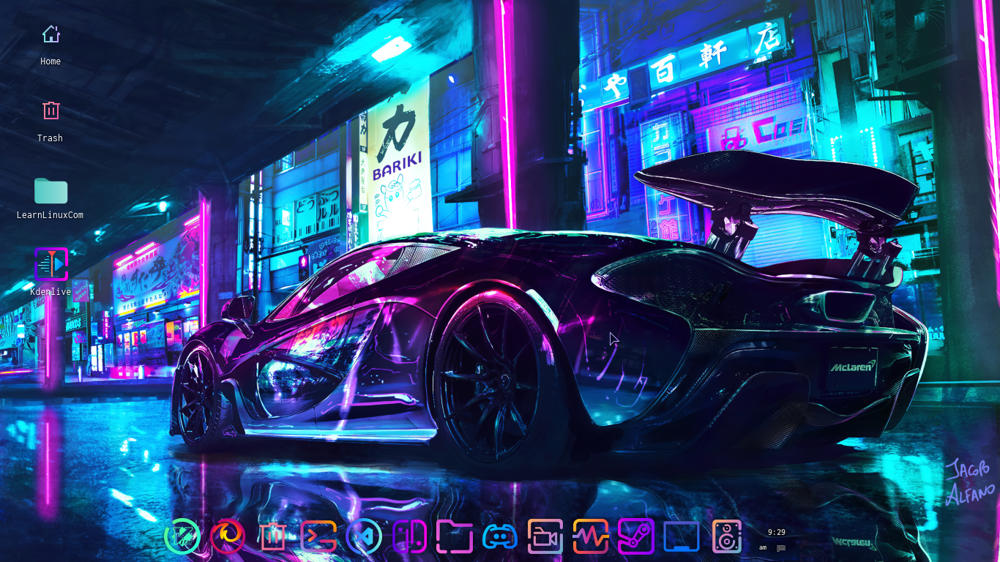

Are you also tired of the boring look of your Xfce desktop environment? Well this article is made for you. Ricing in simple words mean customization of your desktop environment. In this article you will learn ricing Xfce desktop environment from scratch.
First of all, you need to decide the colour scheme of your rice. In this example I'm going to show you a rice for the neon theme. Download an HD wallpaper of your scheme
Find wallpapers hereNow when you have the wallpaper of your scheme, you need to get the icons of that theme. For this neon rice I am using the Candy Icons.
After getting the icons, you have to get the cursor of your scheme.
Now when you have wallpaper, icons and cursor, you need to install a dock and remove the xfce panel. You can follow the link give below to install Plank dock on Linux Mint.
After getting the dock, you should get a nice font for your system. Choose the one you like from the link below.
You are done! You have successfully rice the Xfce desktop environment. Make sure to experiment with different wallpapers, icons, etc. Send your rice on my discord server! :)